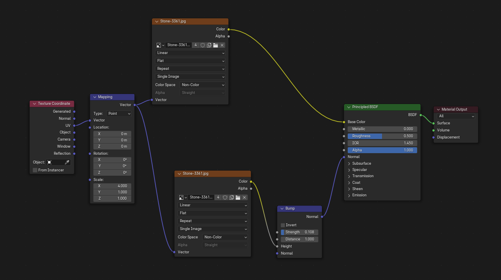
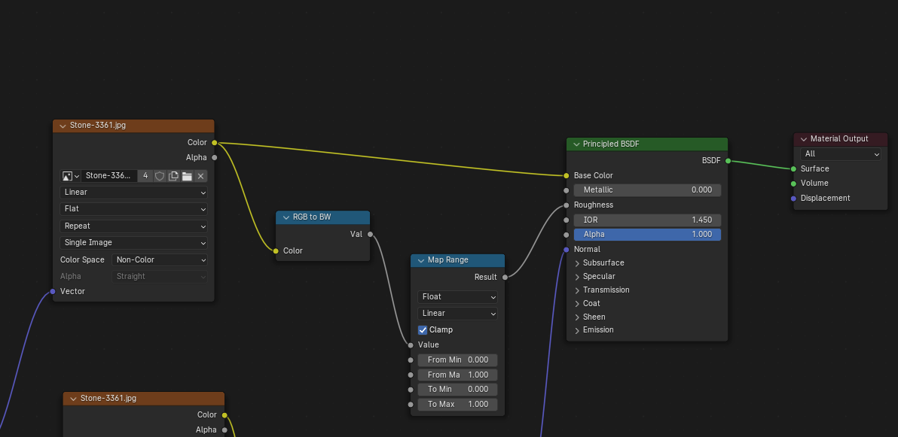
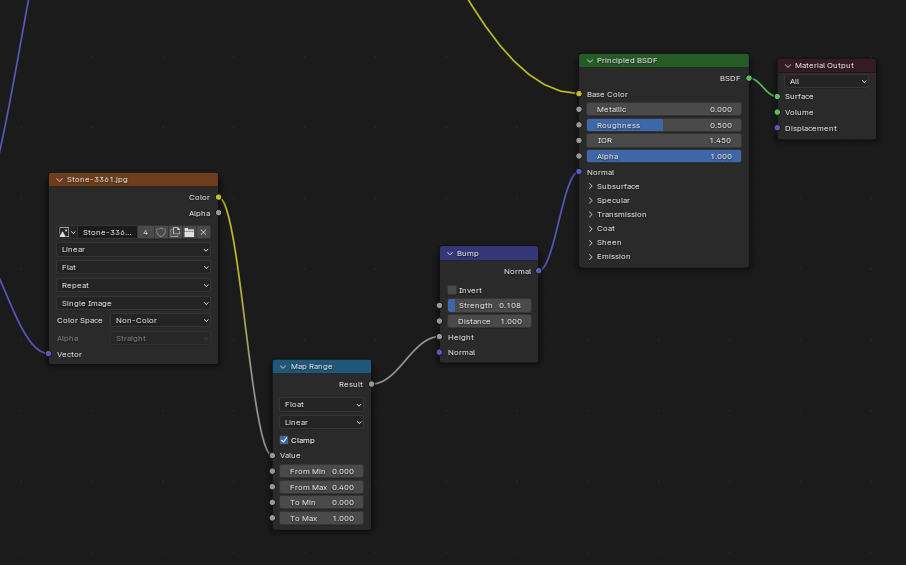
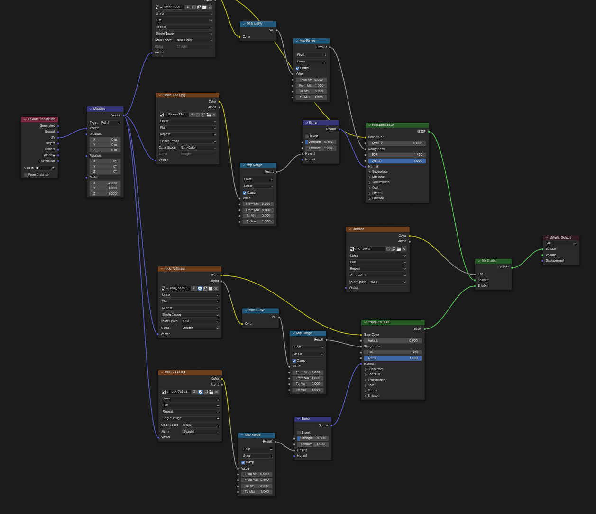
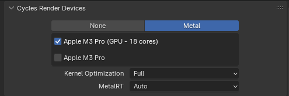
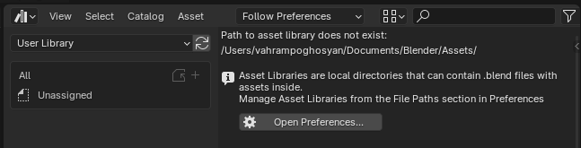

Basic Modelling and Texturing
Basic model for initial UV mapping
Start with an object, make sure to always “Apply Transformations” in object mode to avoid any weirdness with scaling and texturing later on. But, in general, avoid detailed modelling before basic texturing. The more faces you have, the more complex the UV mapping will be.
So, start with the basic object shape, simple quads only. Let’s say you were modelling a Greek column, you would start with the cylinder first, then inset grooves (simple rectangular insets), and finish the basic shape of the column bases. Things like face extrusion can throw off the UV mapping, so it’s best to keep it simple at the beginning. Of course, UV mapping is an iterative process, and you might have to adjust the UV later on. Getting away with simple UV mapping in the beginning will only be possible if you have a good idea already for the final shape of the model (a skill that only comes with practice). For this reason, here are some tips to keep in mind while modelling:
UV mapping
Then, go to the “UV Editing workspace,” select the object, and unwrap it (U > “Unwrap” or U > “Smart UV Project”). This will create a UV map for your object, which is basically the projection of its vertices in 2D space. These UV coordinates are mapped between the 3D model and the 2D texture through a node called “Mapping” in “Shader Editor” (press Ctrl + T while the “texture node” is selected to show its “Mapping” and “Texture Coordinate” nodes).
While smart unwrapping, you want to keep in mind the proportions of the object relative to the texture and its other parts (just confirm there is no stretching or unnecessary tiling). If your texture is not tileable, there is an image editor trick to make it tileable:
Basic Material Setup
On top of the simple texture that goes in the base color of the shader node of the material, we have the full power of shaders to define materials in Blender.
Normal map
We can add a “normal map” to give the illusion of depth and detail on the surface of the model. A normal map is a texture that encodes the direction of the surface normals, which are used by the shader (“Principled BSDF”) to calculate how light interacts with the surface. This can make a flat surface look like it has bumps, grooves, and other details without actually adding more geometry to the model. You can create a normal map from a height map using an image editing software or a dedicated normal map generator.
Here are the practical steps:
- Create a height map of your texture. Just duplicate the Image Texture Node, and ensure this duplicated node is loading the same texture image.
- Crucially, for this duplicated node, change its “Color Space” from sRGB to Non-Color (because we’re going to interpret its brightness values as height, not sRGB color), and connect the UV output from your Texture Coordinate node to the Vector input of this duplicated Image Texture node.
- Connect the Vector output from your Mapping node to the Vector input of this duplicated Image Texture node.
- Add a Bump Node: Press Shift + A > Bump.
- Connect the Nodes: Connect the Color output of your duplicated Image Texture node (the one set to Non-Color space) to the Height input of the Bump Node. (The Color output here is effectively providing a grayscale brightness value, which the Bump node interprets as height). Connect the Normal output of the Bump Node to the Normal input of your Principled BSDF node.
Here’s what that looks like:

Roughness map
We can use the same texture for the “roughness map,” as well. We need to convert it to grayscale first, as we did for the normal map. This is because the roughness map uses the intensity of the pixels to determine how rough or smooth the surface is. In Blender, you can use the “RGB to BW” node to convert the color texture to grayscale before connecting it to the roughness input of the shader. To search for this node, press Shift + A in the shader editor and type “RGB to BW”.
We can also duplicate the texture node again and set it to non-color space, which will give us the same result as the RGB to BW node, but with fewer nodes in the editor.
See the figure below:

We can also add a Map Range node to adjust the contrast of the roughness map. This has the effect of clamping down on the shiny (or matte) areas.

Secondary Material
Applying a second material can be done by:
- Duplicating the Principled BSDF shader node with its texture node, roughness and normal maps (the whole stack)
- Using the “Mix Shader” node to mix the two Principled BSDF shaders together
- Plugging the output of the “Mix Shader” node into the Surface input of the “Material Output” node.
This can be useful for adding weathering effects, such as dirt, chipped stone or wood, or rust, on top of the base material. We can also use a mask texture to control where the secondary material is applied, but more on that later.
Here’s what that looks like:

Notice the Image Texture node. This is the mask texture, plug it into the Fac input of the Mix Shader node. Then draw over it. Black and white values in the mask will control the blending of the two materials, black will show the base material, white will show the secondary material, and gray will show a mix of both materials depending on the intensity of the gray. For this we need a pressure-sensitive drawing tablet. The Image Texture node is set to non-color space, and it’s 4096x4096. Hit Ctrl + Tab and select “Texture Paint” mode to start drawing on the mask texture (directly on the model!). Use Ctrl to toggle the base material and secondary (effectively erasing).
Combined Normal Maps (For Carving)
This is good for carving details on the surface of the model. We can use a Bump node two outputs going into each BSDF shader (for an object with 2 materials), and then use a Mix RGB node with two colors (white and black) to pipe it into the height input of the Bump node. Then to the Fac input of the Mix RGB node, we can plug in an Image Texture node that has the details we want to carve. We draw on this texture similar to the mask texture for the secondary material, but instead of controlling the blending of two materials, it controls how chiseled the combined surface looks.
Transferring Materials Between Different Software
When transferring materials between different software, such as from Blender to Unreal Engine, we need to bake the color, normal, and roughness maps. This is because different software have different shader systems, and the materials we create in Blender may not be directly compatible with Unreal Engine (i.e. Unreal doesn’t have the same shader nodes). Baking has to be done per material.
To bake the base color (after texture painting):
- Create a new Image Texture node (make it have 4K resolution, i.e. 4096x4096).
- Make sure the object is selected in Object Mode, select the new Image texture in the Shader Editor, and go to the Render Properties tab (small TV icon on the right-hand panel). Under the Bake section, select “Diffuse” for the bake type (the base color is also known as “albedo” or “diffuse”). In the Contribution section, uncheck “Direct” and “Indirect” so that only the color information is baked (not lighting, we will do that separately). Then click the “Bake” button to start the baking process.
This will bake the texture with all the details you painted on it, and you can now save this baked texture to use in Unreal Engine. To make the process fast, lower the Sampling to max samples = 10.
Making a Water Shader (Using Blender’s Cycles Engine)
Here are all the things we need.
First we need to define the environment for the body of water. Create a sun light and add an image texture with an HDRI environment map to the world shader. In World Properties > SUrface > Colorsselect Environment Texture and load your HDRI image. You can get HDRI images from polyhaven.com. This will give us realistic lighting and reflections on the water surface.
Create a cube. The cube will be our water surface (well, not really a plane, since having volume is important). We will be using the volume of the cube in the Shader Editor to create the water material, so it’s important to have a cube instead of a plane.
Then, we can create the water material with the following nodes:
- Delete the Principled BSDF shader that comes with the cube, and replace it with a “Glass BSDF” shader (because water is transparent and has refraction)
- Set the IOR (Index of Refraction) to 1.333 (the IOR of water)
- Also add a Transparent BSDF shader and a Mix Shader node to mix the Glass BSDF and Transparent BSDF together. This will allow us to control the transparency of the water (since water transparency does not behave exactly like glass)
- Add a Light Path node and connect its “Is Shadow Ray” output to the Fac input of the Mix Shader node. This will make the water transparent in shadows, which is more realistic. Is Shadow Ray refers to the rays that are cast from the light source to the object, and get obstructed by another object. We would have access to this programmatically in shader code as well, potentially, in OpenGL with uniform variables. This is just to reinforce that all Blender is doing in the Shader Editor is generating shader code (the nodes describe, just as the code does, the per-pixel logic to calculate the final color of the rendered pixel).
- Add a Noise Texture node and connect its output to the Normal input of the Glass BSDF shader through a Bump node.
- Add a Volume Absorption shader to give the water some color, and connect it to the Volume input of the Material Output node. Set the color to a light blue and adjust the density to your liking. The Volume Absorption node simulates how light is absorbed as it travels through a volumetric medium (like water, smoke, or clouds). It’s used to give depth and color to transparent objects. The shader code that runs on the GPU knows the volume of the object because it has access to the vertices of the cube.
- Create an Add Shader node and connect the volume output of the Volume Absorption shader to one shader input of the Add Shader node. 9. Create a new Principled BSDF shader and connect its output to the other shader input of the Add Shader node. Pick a color for the Principled BSDF shader. Set emission.
The steps are slightly different for EEVEE (Blender’s newer rendering engine), since EEVEE does not support volume shaders. More on this later.
I did not notice much difference in the performance of my old AMD Radeon RX 5600 XT GPU on the Cycles engine with this water shader, as compared to my MacBook Pro M3 Pro. Not sure if I’m doing something wrong, but I expected the M3 Pro to be much faster. I will have to do more testing and research on this. GPU is selected as the render device in the Blender system preferences (doing this single step doubled the performance on the Mac).

The performance is currently still suboptimal on the Mac, so I want to try the EEVEE engine (with a material specifically created for EEVEE, using the Raycast node). But, before that, there are ways to optimize viewport rendering (and rendering in general). This video goes over some of the optimizations you can make to improve viewport performance in Blender. People report incredible impact, so it’s worth a try.
Procedural Materials Playlist
This playlist has some good tutorials on procedural materials in Blender, which is a powerful way to create materials without relying on image textures. Note, this is an alternative to the texturing process described above, and it can be used in combination with it as well. Image textures usually take less time to set up, but procedural materials can give you more control and flexibility over the final look of the material (and can accommodate changes more easily, since they are not tied to a specific image).
Be sure to use the Material Library plugin to save your procedural materials, so you can reuse them in other projects.
Premade Materials and Objects
Blender has an extensive library of premade materials and objects that you can use in your projects called the Asset Browser. It comes with some materials, and objects, but you can store your own in the form of .blend files in the asset library as well.

After setting up your asset folder as above, you can right click on any material or object in your scene and select “Mark as Asset” to add it to the asset library. You can then access it from the Asset Browser and drag and drop it into your scene whenever you need it. To access the asset browser, switch to the “Asset Browser workspace” from the top of the Blender interface.
Optimizing Viewport Performance in Blender
- Persist some parts of the final render between renders (instead of re-rendering the whole viewport every time).
- Render properties > Performance > Final Render > Persistent Data
- Reduce render tile size, this is how much of the image is rendered at a time.
- Performance > Memory > Tile Size = 512
- To reduce blurriness, reduce pixel size
- Render properties > Viewport > Pixel Size = 1
- Switch Light Tree off, this setting controls how the light bounces are calculated, and can have a big impact on performance. Render properties > * Sampling > Lights > Light Tree > Uncheck
- Make sampling automatic (per need). Sampling controls the number of light rays that are cast to calculate the lighting of a single pixel. This setting can have exponential impact on performance. By turning this setting on, Blender samples different areas of the image with different sample counts, depending on how complex the lighting is in that area. This can significantly reduce render times while still maintaining good image quality.
- Render properties > Sampling > Render > Noise Threshold = 0.1